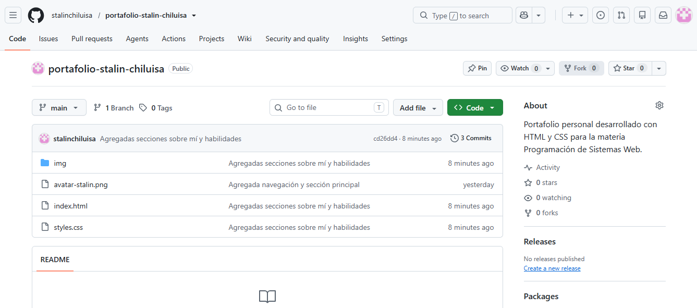
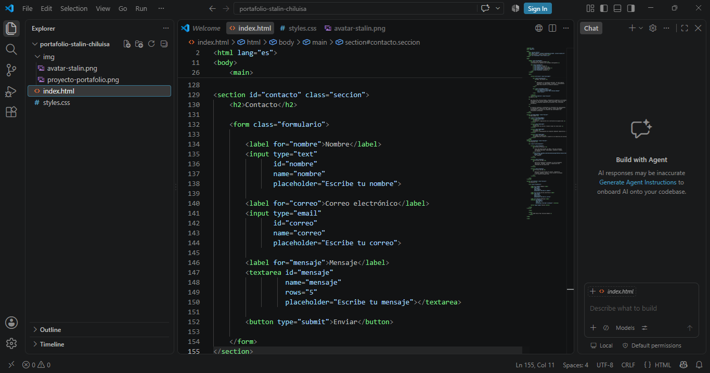
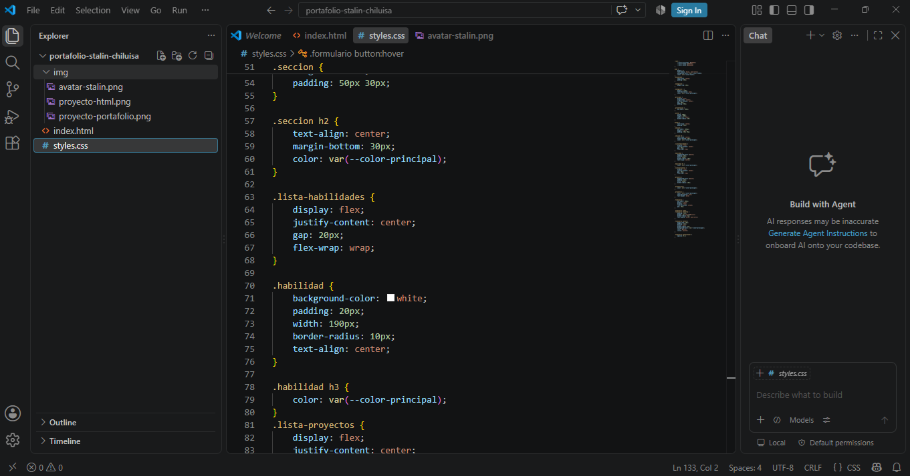

HTML
Creación y organización de la estructura de páginas web.
Estudiante de Ingeniería en Sistemas Inteligentes
Bienvenido a mi portafolio personal. En este espacio presentaré mis habilidades, proyectos y conocimientos adquiridos durante mi formación académica.
Soy Stalin Paul Chiluisa Baidal, estudiante de Ingeniería en Sistemas Inteligentes. Me interesa aprender sobre tecnología, desarrollo de sistemas y herramientas digitales que permitan crear soluciones innovadoras.
Mi objetivo académico y profesional es fortalecer mis conocimientos en programación y desarrollo web, adquirir nuevas habilidades tecnológicas y aplicarlas en proyectos que contribuyan a mi crecimiento profesional.
Creación y organización de la estructura de páginas web.
Aplicación de estilos y diseño visual en sitios web.
Control y almacenamiento de proyectos mediante repositorios.
Capacidad para colaborar y aportar en el desarrollo de actividades.

Sitio web desarrollado con HTML y CSS para presentar información personal, habilidades, proyectos y medios de contacto.
Ver proyecto
Ejercicios académicos orientados al uso de etiquetas semánticas, imágenes, enlaces y organización del contenido de una página web.

Ejercicios de aplicación de colores, tipografías, márgenes, padding, flexbox y otros estilos utilizados en el diseño de páginas web.